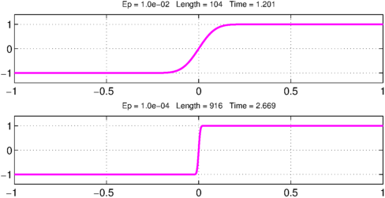
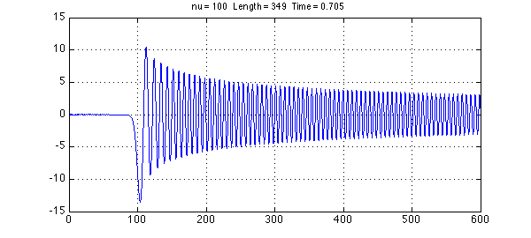
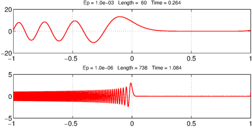
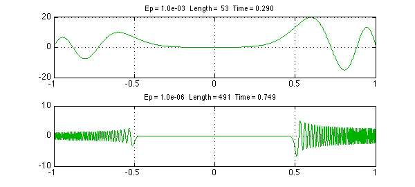
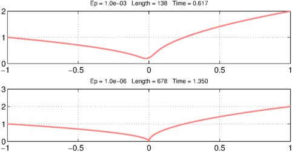
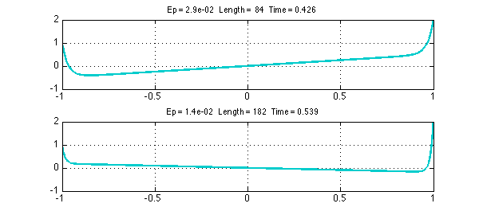

In 1997 Lee and Greengard published a paper called "A fast adaptive numerical method for stiff two-point boundary value problems" [1]. The algorithm described there, being adaptive, can handle far stiffer problems than Chebfun. Nevertheless Chebfun does pretty well with Lee and Greengard's interesting collection of examples. These problems are linear.
The following discussion is based on Chebfun's classical spectral discretizations (rectangular collocation). It would be interesting to revisit the same examples with the alternative ultraspherical discretizations introduced with Version 5 to see whether certain values of $\varepsilon$ can be reduced further.
Example 1. Viscous shock
The first example is $$ \varepsilon u''(x) + 2 x u'(x) = 0, \quad u(-1) = -1, ~ u(1) = 1. $$ The following anonymous function produces a Chebfun solution as a function of $\varepsilon$:
uep = @(ep) chebop(@(x,u) ep*diff(u,2) + 2*x.*diff(u),[-1,1],-1,1)\0;
Here we plot the solution for $\varepsilon = 0.01, 0.0001$. It works fine, but Lee and Greengard can go down to $10^{-14}$.
FS = 'fontsize'; LW = 'linewidth';
for k = 1:2
ep = 10^(-2*k);
subplot(2,1,k)
tic, u = uep(ep); t = toc;
plot(u,'m',LW,2), ylim(1.4*[-1 1]); grid on
s = sprintf('Ep = %5.1e Length =%4d Time =%6.3f',ep,length(u),t);
title(s,FS,10)
end

Example 2. Bessel equation
The second example is $$ u''(x) + x^{-1} u'(x) + {x^2-\nu^2\over x^2} u(x) = 0, \quad u(0) = 0, ~ u(600) = 1 $$ with $\nu = 100$. We follow the same pattern as before (multiplying the equation through by $x^2$):
unu = @(nu) chebop(@(x,u) x.^2.*diff(u,2)+x.*diff(u)+(x.^2-nu^2).*u,[0,600],0,1)\0;
The solution for $\nu = 100$ looks just as in Lee and Greengard:
nu = 100;
tic, u = unu(nu); t = toc;
clf, plot(u,LW,1.2), grid on
s = sprintf('nu = %3d Length =%4d Time =%6.3f',nu,length(u),t);
title(s,FS,10)

Example 3. Turning point
This example is an Airy equation, $$ \varepsilon u''(x) - x u(x) = 0, \quad u(-1) = 1, ~ u(1) = 1. $$ We proceed as usual:
uep = @(ep) chebop(@(x,u) ep*diff(u,2)-x.*u,[-1,1],1,1)\0;
clf
for k = 1:2
ep = 10^(-3*k);
subplot(2,1,k)
tic, u = uep(ep); t = toc;
plot(u,'r',LW,1.2), grid on
s = sprintf('Ep = %5.1e Length =%4d Time =%6.3f',ep,length(u),t);
title(s,FS,10)
end

Example 4. Potential barrier
The fourth example is $$ \varepsilon u''(x) + (x^2-0.25)u(x) = 0, \quad u(-1) = 1, ~ u(1) = 2. $$ Here we go:
uep = @(ep) chebop(@(x,u) ep*diff(u,2)+(x.^2-0.25).*u,[-1,1],1,2)\0;
for k = 1:2
ep = 10^(-3*k);
subplot(2,1,k)
tic, u = uep(ep); t = toc;
plot(u,'color',[0 .7 0],LW,1.2), grid on
s = sprintf('Ep = %5.1e Length =%4d Time =%6.3f',ep,length(u),t);
title(s,FS,10)
end

Example 5. Cusp
This time we have $$ \varepsilon u''(x) + x u'(x) - 0.5u(x) = 0, \quad u(-1) = 1, ~ u(1) = 2. $$ With a global discretization and standard defaults, Chebfun can go down to $10^{-5}$ or so. With a breakpoint introduced at $x=0$ by specifying the domain [-1, 0, 1], we get a little further, though not as far as Lee and Greengard:
uep = @(ep) chebop(@(x,u) ep*diff(u,2)+x.*diff(u)-0.5*u,[-1 0 1],1,2)\0;
for k = 1:2
ep = 10^(-3*k);
subplot(2,1,k)
tic, u = uep(ep); t = toc;
plot(u,'color',[1 .5 .5],LW,2), grid on
s = sprintf('Ep = %5.1e Length =%4d Time =%6.3f',ep,length(u),t);
title(s,FS,10)
end

Example 6. Exponential ill-conditioning
Finally we consider $$ \varepsilon u''(x) - x u'(x) + u(x) = 0, \quad u(-1) = 1, ~ u(1) = 2. $$ The pictures look fine down to Lee and Greengard's value of $\varepsilon = 1/70$:
uep = @(ep) chebop(@(x,u) ep*diff(u,2)-x.*diff(u)+u,[-1 0 1],1,2)\0;
for k = 1:2
ep = (1/35)/k;
subplot(2,1,k)
tic, u = uep(ep); t = toc;
plot(u,'color',[0 .8 .8],LW,2), grid on
s = sprintf('Ep = %5.1e Length =%4d Time =%6.3f',ep,length(u),t);
title(s,FS,10)
end

However, this problem is highly ill-conditioned and I have not investigated how accurate the solution really is.
References
- J.-Y. Lee and L. Greengard, "A fast adaptive numerical method for stiff two-point boundary value problems", SIAM Journal on Scientific Computing 18 (1997), 403-429.